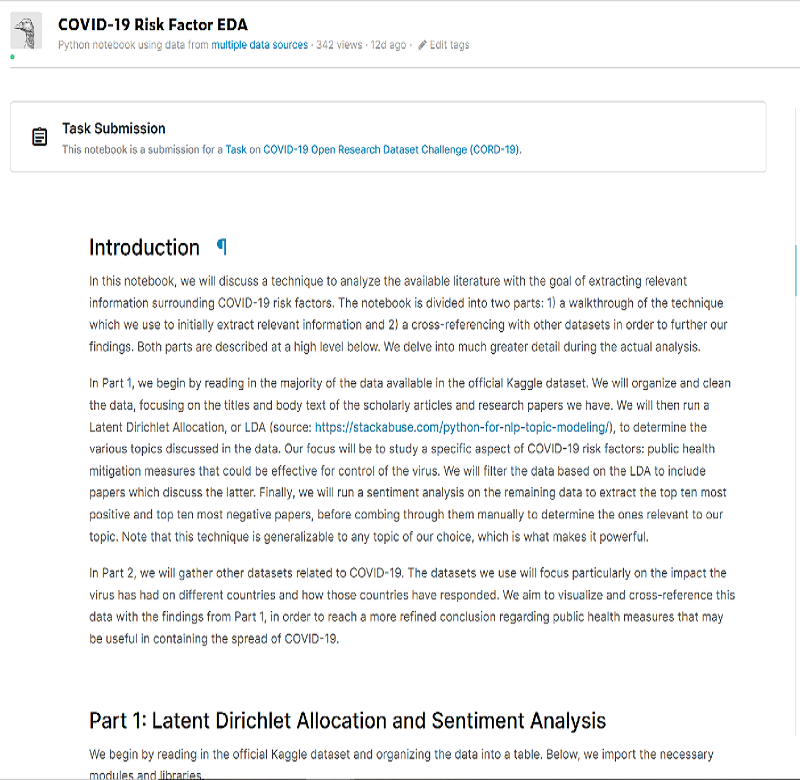

Just an old soul who
likes overthinking.
Below, you will find a collection of various projects,
writings, and other activities I completed in my free time.
Hover over a box for a short description of the item!
COVID-19 Data Analysis
Completed in 2020 for the Kaggle Covid-19 Open Research Dataset Competition. This Jupyter notebook contains an analysis of the large volume of text data (consisting primarily of research papers related to COVID-19 and other coronaviruses) provided by Kaggle. In it, I implement Latent Dirichlet Allocation to identify papers pertaining to public health control measures, and combine the results with other datasets to perform two case studies.

The Tale of Munt
A story about an ambitious and rather arrogant young college student named Munt. He arrives to his university with every intention of implementing his perfect life, only to have his big plans immediately thwarted by an annoyingly talkative roommate and an enchanting young woman. Still in progress.